Divisor of Index as Divisor of Fibonacci Number
1. Proposition
For 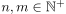 such that 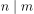 following statement holds true:
 1
1
2. Proof
By Assumption there exists an  such that 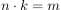
Using a Proof by induction we show, that 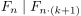 if 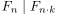
such that 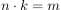
Using a Proof by induction we show, that 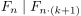 if 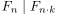
2.1. Basis
Holds true for 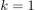.
2.2. Step
By Assumption  and therefore there exists an
and therefore there exists an  such that 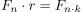
Therefore we can deduce from the recursion formula:
such that 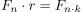
Therefore we can deduce from the recursion formula:
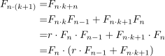
2
nd follows